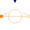

SignalMagneticPotentialDifferenceSignal-controlled magnetomotive force |

|
Information
This information is part of the Modelica Standard Library maintained by the Modelica Association.
In electromagnetic devices, a change of a coil's magnetic flux linkage Ψ reacts on the electrical subsystem in that a voltage v is induced due to Faraday's law:
v = - dΨ/dt
This reaction can possibly be neglected for
- modelling of electromagnetic actuators under quasi-static conditions (slow current change, slow armature motion),
- modelling of current-controlled electromagnetic actuators (ideal current source) and
- for system simulation where the system dynamics is not governed by an electromagnetic actuator, but by the surrounding subsystems.
In these cases, the magnetic potential difference or magnetomotive force imposed by a coil can easily be modelled with a signal-controlled source. Except for the neglected dynamics, steady-state actuator forces will be calculated properly in actuator models based on these sources.
Connectors (3)
| port_p |
Type: PositiveMagneticPort Description: Positive magnetic port |
|
|---|---|---|
| port_n |
Type: NegativeMagneticPort Description: Negative magnetic port |
|
| V_m |
Type: RealInput Description: Magnetic potential difference |